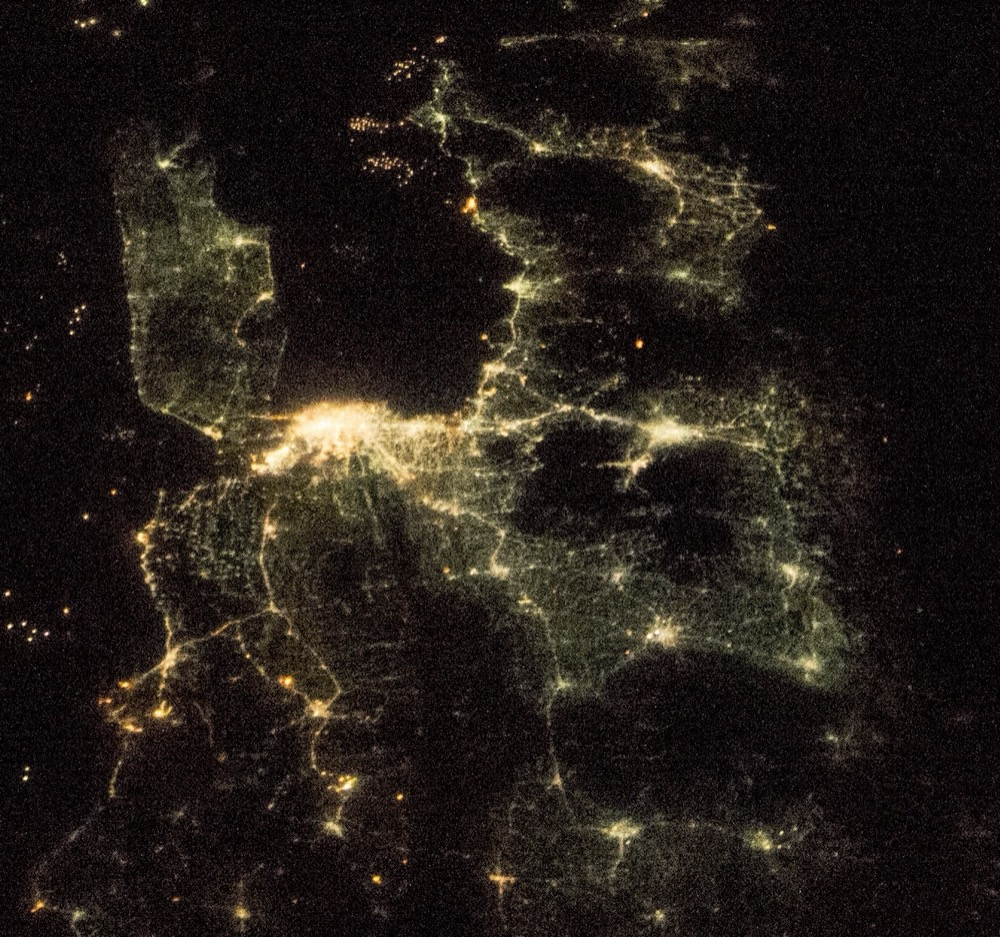
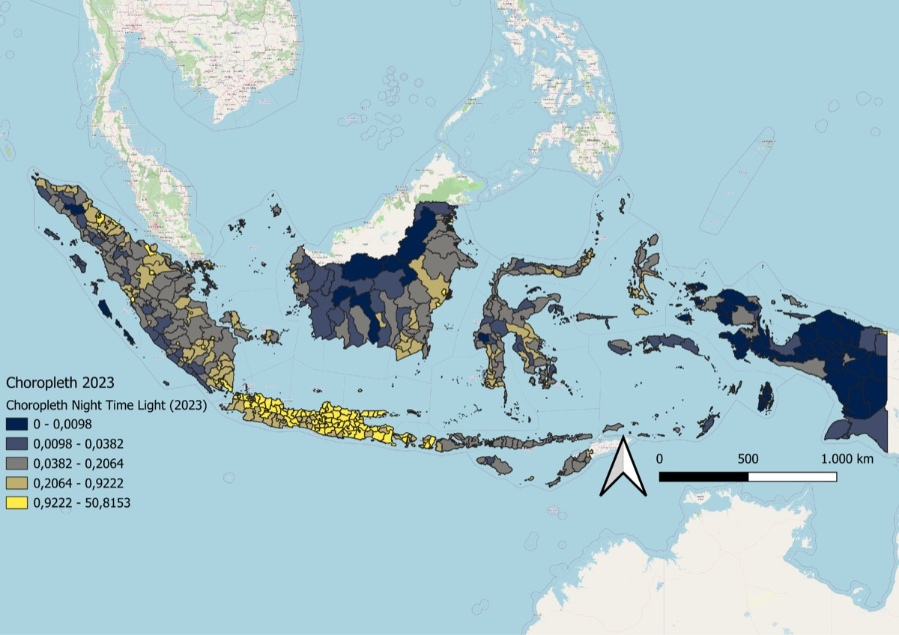
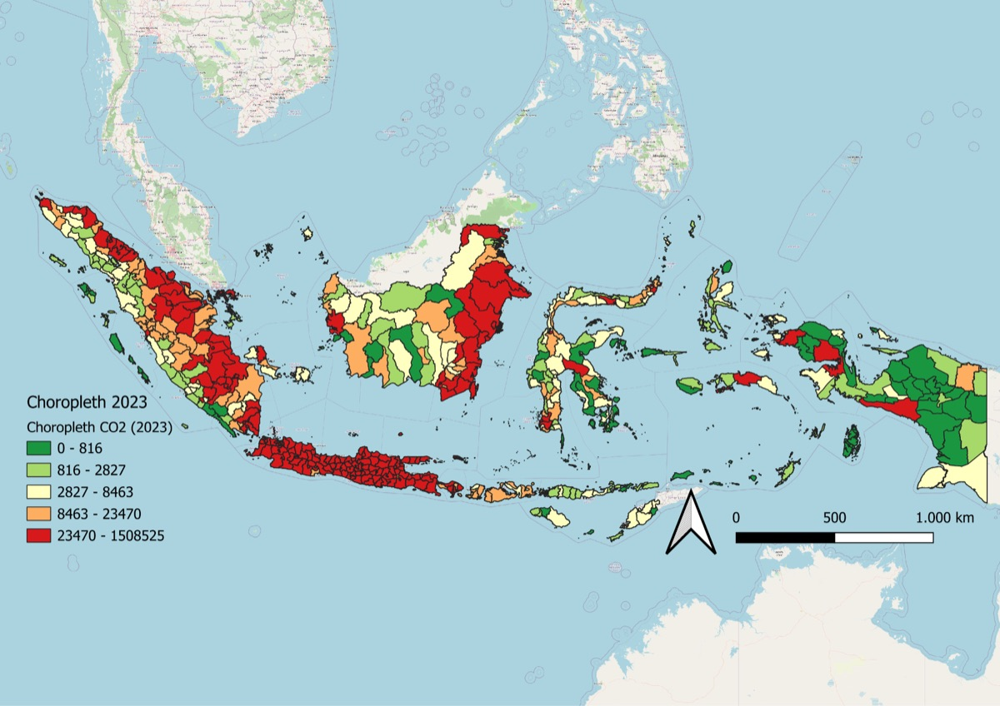

Executive summary
Indonesia's special economic zones (SEZs) have not yet raised night-time light in the districts around them. By mid-2025 the country had 25 operating zones and IDR 294.4 trillion in cumulative realised investment, on the premise that growth would spread past the zone border. This thesis tests that premise on 514 districts, with 72 of them within 60 km of a zone. The estimated effect on night-time light is 0.024 log points for all zones together, and it is not statistically different from zero.
Method changes the answer. A standard two-way fixed effects model reports a significant rise of 0.074 for the same outcome. That result disappears once the estimator of Callaway and Sant'Anna (2021) handles zones that opened in different years.
Tourism zones are the exception on the environmental side. Carbon dioxide in nearby districts is about 4.5 percent higher, and nitrogen dioxide is higher by 1.725 µmol/m². Manufacturing zones show no significant change in light or in any pollutant.
These results point to an imbalance around tourism zones, where emissions are already measurable and economic gains are not. But most zones in the sample had operated for only two to five years, while spillovers elsewhere have taken four to ten, so the findings describe the early years of the programme.
How the study works
 A zone opens19 SEZs, opening between 2015 and 2024
A zone opens19 SEZs, opening between 2015 and 2024- Neighbours are identified72 districts with a centre within 60 km
- Satellites keep watchNight-time light, CO₂, NO₂, SO₂, and CO
 Districts are comparedAgainst 442 districts that never had a zone nearby
Districts are comparedAgainst 442 districts that never had a zone nearby
The question
Zone-based policy often stops at the fence. Agglomeration theory predicts that activity inside a zone should spread through labour mobility, supply chains, and infrastructure. Yet evidence from other countries repeatedly finds zones that work as enclaves, where investment and jobs stay inside the boundary, and most Indonesian evidence comes from case studies of single zones that are hard to generalise.
The thesis asks three questions at national scale:
- Do SEZs change economic activity and air quality in surrounding districts?
- How far do those effects reach, and do they fade with distance?
- Do the effects differ between manufacturing and tourism zones?
Pollution matters here because it does not wait for linkages to form. Construction and new energy demand can raise emissions early, and pollutants travel farther than most economic spillovers.
Data and method


Satellite data make a national comparison possible. Night-time light stands in for local economic activity, which is poorly measured in many districts, and its correlation with district GDP in this sample is 0.57, although it misses daytime and informal activity. Annual pollutant data come from ODIAC and Sentinel-5P, aggregated to district boundaries with Google Earth Engine and QGIS.
A district counts as treated when its centre lies within 60 km of a zone, from the year the zone began operating. Using operating years avoids counting the construction period as treatment. Distance works better than shared borders in an archipelago, where two districts across a strait are not formally neighbours.
Zones opened in different years, which is why the estimator matters. Two-way fixed effects can compare newly treated districts with those treated earlier, and that comparison can bias results. The thesis uses Callaway and Sant'Anna's estimator with never-treated districts as controls, and tests pre-trends, distance rings, regional subsamples, alternative control groups, and placebo dates.


Findings
Lights rose almost everywhere between 2013 and 2023, so a rise near a zone proves little by itself. Districts within 60 km of a zone brightened by 67 percent over the decade, and all other districts by 75 percent. The formal estimates compare each district with its own earlier path.
Districts near zones did not brighten faster than the rest
Mean night-time light by district, indexed to 100 in 2013. Districts are grouped by distance to a zone, whatever year the zone opened.
Author's calculation from the thesis panel of 514 districts. Night-time light is VIIRS mean radiance. These group averages are descriptive and do not estimate the effect of a zone. 2024 is left out.
Only tourism zones left a significant pollution signal
Estimated change in nearby districts after a zone opens, in log points, with 95 percent confidence intervals.
| Outcome | All zones | Manufacturing | Tourism |
|---|---|---|---|
| Night-time light (log) | 0.024 (0.024) | 0.035 (0.031) | 0.006 (0.036) |
| CO₂ (log) | 0.008 (0.005) | 0.007 (0.005) | 0.044** (0.022) |
| NO₂ (µmol/m²) | 0.129 (0.814) | −0.611 (1.163) | 1.725** (0.704) |
| SO₂ (µmol/m²) | −6.397 (5.867) | −7.448 (7.731) | −4.110 (9.667) |
| CO (mmol/m²) | −0.219 (0.152) | −0.363 (0.223) | −0.142 (0.254) |
Standard errors in parentheses. ** p < 0.05.
Callaway and Sant'Anna estimates with never-treated controls and doubly robust weighting. Light from VIIRS, CO₂ from ODIAC, NO₂, SO₂, and CO from Sentinel-5P. Pre-treatment averages show no sign of diverging trends.
The two types of zone behave differently

Manufacturing zones
No significant change in light or any pollutant. These zones sit in corridors that were already polluted, so one new zone is hard to detect.
Tourism zones
CO₂ is about 4.5 percent higher and NO₂ is 1.725 µmol/m² higher, or about 13 percent of the sample mean. Light does not change. The CO₂ estimate averages 0.065 across the post-treatment years, so emissions have not yet turned.
Distance tells less than expected
Effects do not fade neatly with distance. Night-time light is insignificant in every ring, so the 60 km cut-off is not hiding a stronger effect close to the zones. The CO₂ estimate is largest at 60 to 90 km, though no single ring is significant.
| Distance from zone | 0–30 km | 30–60 km | 60–90 km | 90–120 km |
|---|---|---|---|---|
| Night-time light | 0.052 (0.094) | 0.020 (0.068) | −0.030 (0.048) | 0.016 (0.027) |
| CO₂ | 0.007 (0.023) | 0.011 (0.009) | 0.029 (0.028) | 0.009 (0.006) |
All zones. Standard errors in parentheses. No estimate is significant.
The national average hides regional signals
Light does respond in one part of the country. The Sumatra and Bangka group records a significant effect of 0.089 at the 5 percent level, and manufacturing zones in Java and Sumatra record 0.047 at the 10 percent level. Both fit a pattern in which industrial gains appear where agglomeration already exists.
Why the lights stay off
The thesis does not show that Indonesian SEZs have failed. Three explanations fit the null result, and the data cannot yet separate them.
- Dilution. Growth near a zone is averaged across a whole district, and Damayanti (2024) finds signals at sub-district level.
- Time. Most zones are two to five years old, and spillovers elsewhere have taken four to ten.
- Enclaves. Zones may attract investment without building links to local suppliers and workers, as case studies of Sei Mangkei suggest.
The tourism result has its own likely causes: low emissions before the zone opened, construction in previously undeveloped areas, and a lasting footprint from travel and energy use. Manufacturing zones sit in corridors that were already polluted, so one new zone is hard to detect. That does not make them clean.
Policy implications
- Report emissions at zone level. Presidential Regulation 110 of 2025 assigns greenhouse gas inventories by firm and sector, so a zone's total is never consolidated. Operating zones could begin with mandatory self-assessment and baseline data.
- Account for tourism emissions by destination. These emissions come from many small providers and visitor trips, which plant-level monitoring cannot capture. A workable method still needs to be agreed between the central government, zone managers, and environmental authorities.
- Evaluate zones beyond their fences. National SEZ Council reporting rests on investment, tenants, and jobs inside each zone. Adding outcomes in surrounding districts would show whether a zone is a growth centre or an enclave.
Limitations
District-level data cannot see small local effects, particularly in large districts outside Java. Narrower cut-offs would sit closer to the zones, but the treated group falls from 72 districts at 60 km to 7 at 15 km.
The window is short. Sentinel-5P data leave few pre-treatment years for NO₂, SO₂, and CO, so those parallel-trends checks are weaker than the ones for light and CO₂. The CO₂ placebo at two years before opening is marginally significant, which may reflect emissions from construction.
Each district is assigned to its nearest zone as of the end of the period, and the thesis has no zone-level data on investment, jobs, or land use. Sub-district or village data would be the natural next step.
How to cite
Pratama, M. I. (2026). Spillover or Still Over? Do Indonesia's SEZs Leave Light and Environmental Signature Beyond Their Borders? Bachelor's thesis, Faculty of Economics and Business, Universitas Indonesia.
Other papers are in the research list. Questions are welcome at ilhamp2709@gmail.com.